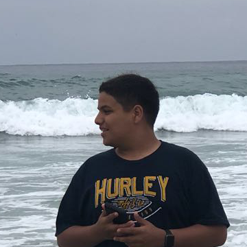

Hi, I'm Amar

This is my portfolio website of my progress throughout the school year.
Hello! I'm Amar Shohatee, I'm currently a sophomore and attend Fordson high School and Michael Berry Career Center. Throughout the school year I’ve accomplished a lot. Once I walked in this class on the first day of school, I already had a feeling that we would have to do a lot of work. I was able to experience how to use all different types of applications such as Photoshop, Illustrator, Rhino, and Flash. I am certified in Adobe illustrator knowing the basics and a whole lot more.I'm interested in becoming an Engineer. I’ve always had mix feelings on becoming a an Engineer or a Real estate agent. The reason why I had thoughts on Real estate was because I come from a family that are real estate agents or are in the business industry. I’ve loved cars ever since I was a kid and had an interest in engineering.
To view all my work that I have created throughout the year click on the links on the top left corner to scroll through all the different applications.